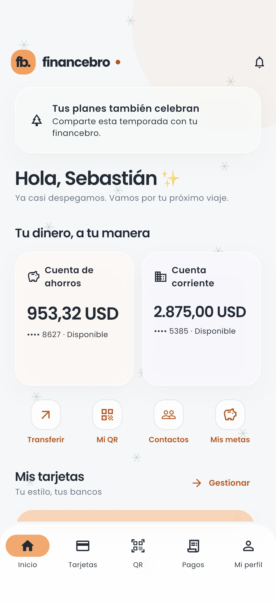

Una mirada a cada
paso de FinanceBro.
Explora las pantallas, sus estados y las interacciones que conectan a clientes y asesores. Capturas de la aplicación ejecutándose con perfiles ficticios y del panel publicado.

Tu dinero, a tu manera.Recorridos para la evaluación
Elige un recorrido para filtrar sus pantallas. Las imágenes se amplían al pulsarlas; las operaciones se realizan en la app y el panel con los accesos entregados por separado.
El recorrido, en detalle.
Cargando capturas…
No hay capturas con estos filtros. Prueba otra función o plataforma.
Una confirmación conserva su referencia.
Las transferencias guardan la autorización antes del envío, incluso con internet. Débito, abono, históricos y avisos se registran en una transacción; los reintentos consultan el mismo comprobante. Los clientes y asesores no escriben saldos directamente.
Ver escenarios de concurrencia y reversión ↗Consulta de saldos e históricos.
La conciliación es una comprobación de los perfiles ficticios en una fecha concreta. Las cuentas de evaluación pueden cambiar cuando se utilizan.Cómo interpretar esta revisión
Android e iOS se capturaron en emulador y simulador. El panel utiliza el mismo servidor publicado; los valores corresponden al momento de cada captura. Las pantallas sin internet usan un escenario controlado, identificado al ampliar la imagen.
FinanceBro es un prototipo: fondos, proveedores, documentos y tarjetas son ficticios. La programación mensual es visual y no ejecuta débitos automáticos. Android dispone de push remotas; los avisos de iOS dependen de la conexión de la app mientras no se habilite APNs. Wallet y emisión física requieren integraciones adicionales.